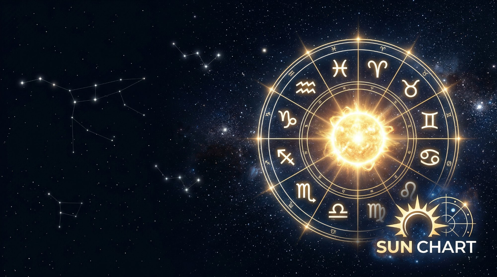

Натальная карта
Н+Транзиты
Транзиты
Соляр
Лунар
Релокация
Комбо
Совместимость
Хорар
···
Натальная карта + Транзиты
Данные рождения
Имя
Дата рождения
Время рождения
Город рождения
Пол
М
Ж
Широта (Рождение)
Долгота (Рождение)
Часовой пояс (IANA)
Данные Транзита
На одну дату
На период
Дата транзита
Время транзита
Начало периода
Конец периода
Без транзитной Луны
Только мажорные аспекты
Без Солнца, Меркурия, Венеры
Без фиктивных точек (Лилит, Селена и др.)
Город транзита (для локальных домов)
Широта (Транзит)
Долгота (Транзит)
Часовой пояс транзита (IANA)
РАССЧИТАТЬ
Полный вывод
⎘ Копировать